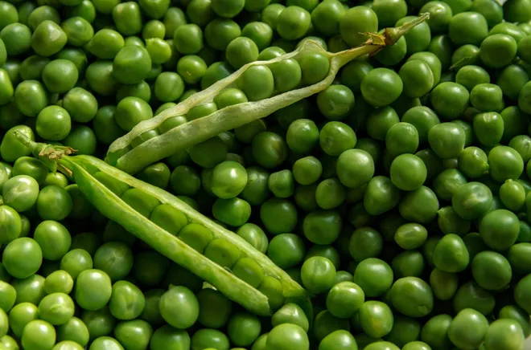
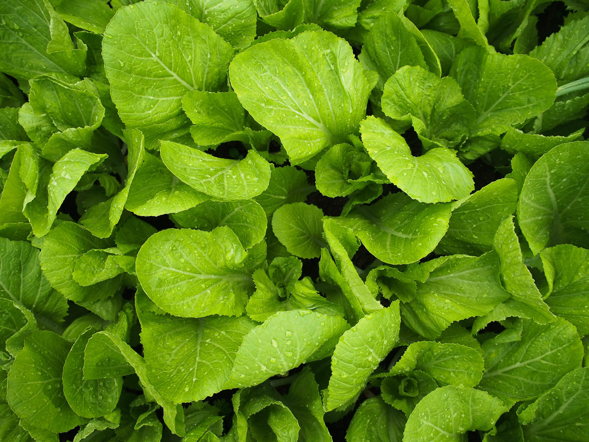
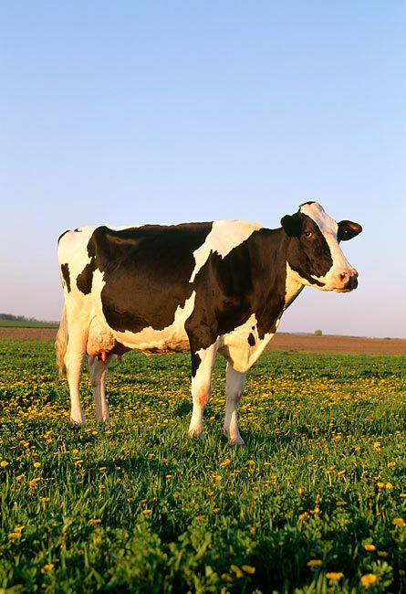
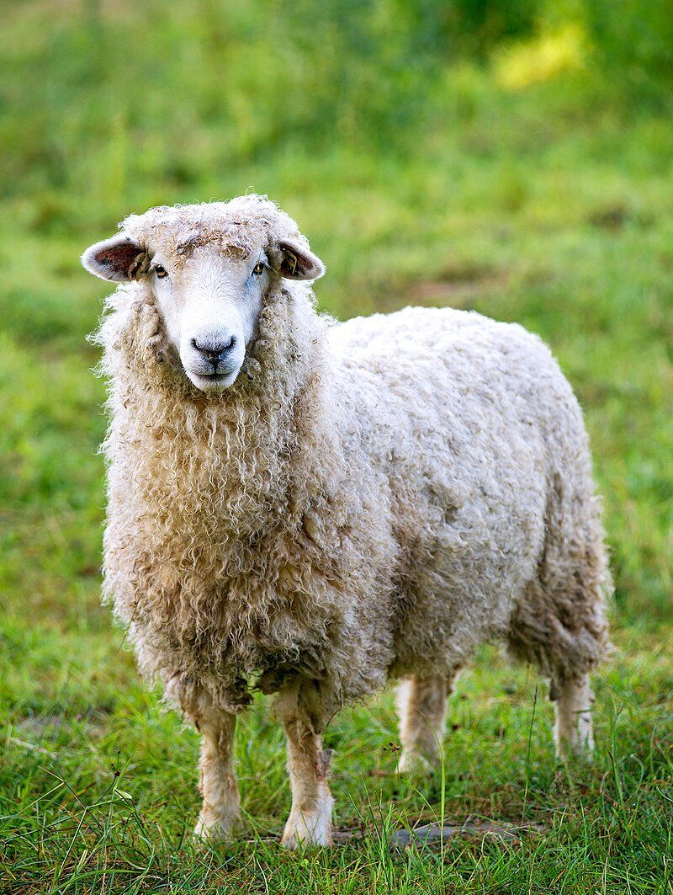
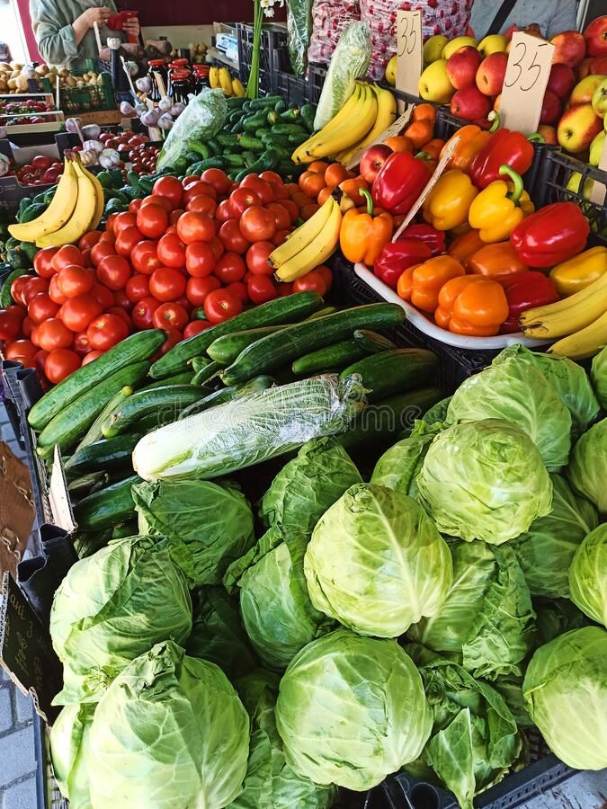
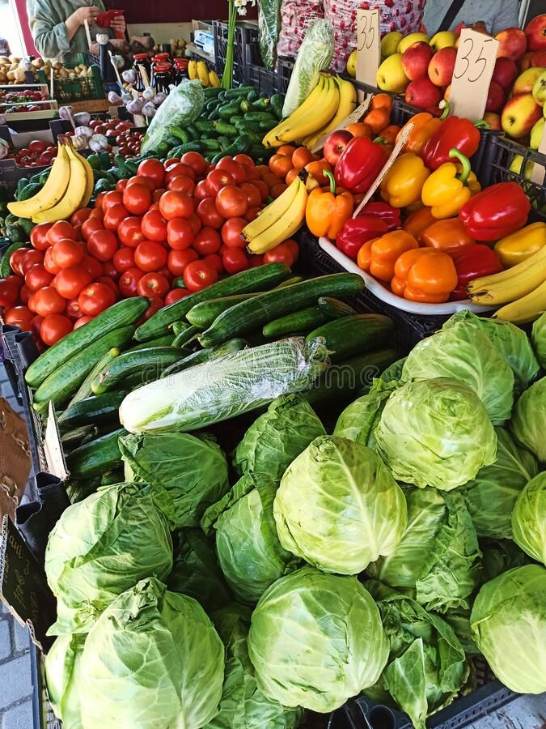

Explore categories of farmers and their products.
Crop Farmers
 Fresh vegetables, grains, and organic produce straight from local fields.
Livestock Farmers
 High-quality meat, dairy, and poultry products from trusted farmers.
Agri-Business
 

Tools, resources, and support for sustainable farming growth.